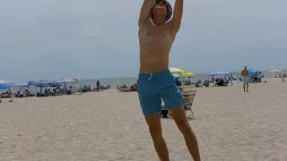
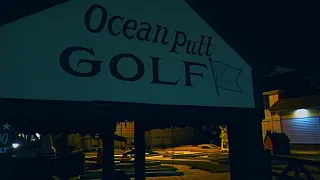

Welcome to my projects page! Click on any video title below to watch the video on YouTube.


I fell in love with filmmaking from Mark Duplass's Creep movie, Seth Rogen and James Franco's The Interview. I love creating projects and sharing them with other people.